Learning Goals
At the end of this Tutorial, you will be able to:
- Create a contollers.js file to store the various router functions for your Express/MongoDB app.
- Refactor the routes.js file so that the routes contain only the router function names, not the actual function code.
- Export the router functions from the controllers.js file and import them into the router.js file.
About the .env file
So far, you have stored your MongoDB connection string in a plain-text file named global.js. A more secure solution is to store the string in a file with special properties named .env. Node.js offers a package named dotenv to manage your app's interaction with the values stored in the .env file.
You will not want to place your .env file under Git source control. So always include this file in your .gitignore file. Other items you would typically include in the .env file are port numbers and database names.
By placing such environment variables in a separate and secure file, you can run your app on any port on any machine without changing the code app code. You only need to modify the environment variables.
About static files
In Express apps, files such as web pages, images, stylesheets, and JavaScript files are referred to as static files. You manage them using the express.static() middleware.
By convention, such files are stored in a folder named /public or a subfolder of it. See the example below.
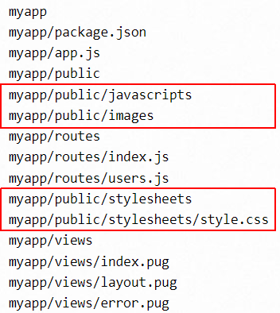Creating your folder structure
Before continuing, close any Node.js apps that may be running on your machine. Also close any open terminals.
In a previous Tutorials, you created the folder structure shown below for three Express/MongoDB apps.
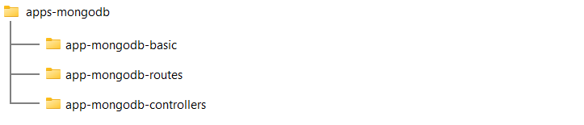Copy the /app-mongodb-controllers folder and rename it to /app-mongodb-static.
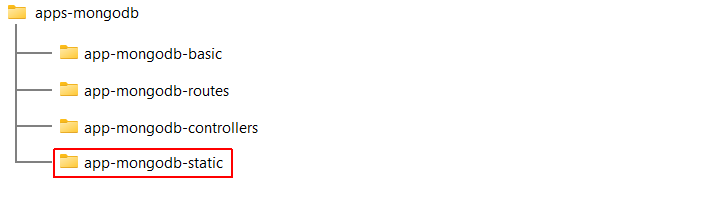Creating the .env file
Your next task is to create the .env file for your new app. Follow these steps:
- In your /server folder, install the dotenv package:
npm i dotenv - Also in your /server folder, create a new text file and name it .env.
- Open your config.js file. Its content should look similar to the following: 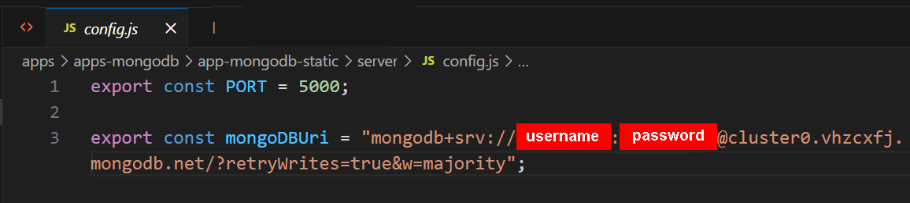
- Copy this content to your .env file.
- Edit the copied content to remove any JavaScript code, spaces, quotes or line-terminators. The format of your .env file should look exactly as follows:

- You can now delete your config.js file.
- In your /server folder, create a new text file and name it .gitignore.
- In the .gitignore enter the following, and save the file
node_modules/ .env
- Open your app.js file and update the import statements at the top of the file as follows:
import express from 'express' import dotenv from 'dotenv' dotenv.config() const PORT = process.env.PORT; const mongoDBUri = process.env.mongoDBUri; const DBNAME = process.env.DBNAME; import mongoose from 'mongoose'; import cors from 'cors' import soccerPlayerRoutes from './routes/routes.js'; - Also in your app.js file, update the connectToMongoDB function as follows. 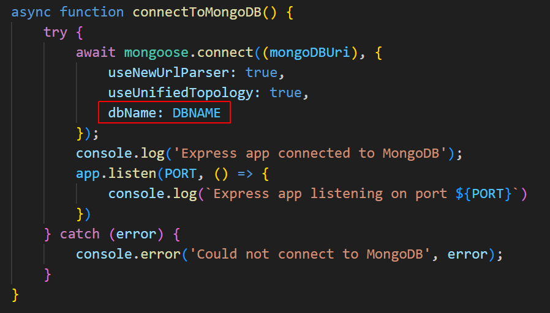
- Start your app and verify it connects to the MongoDB database.
npm run dev
Updating your package.json file
Open your package.json file and update it for your new MongoDB app as shown below.
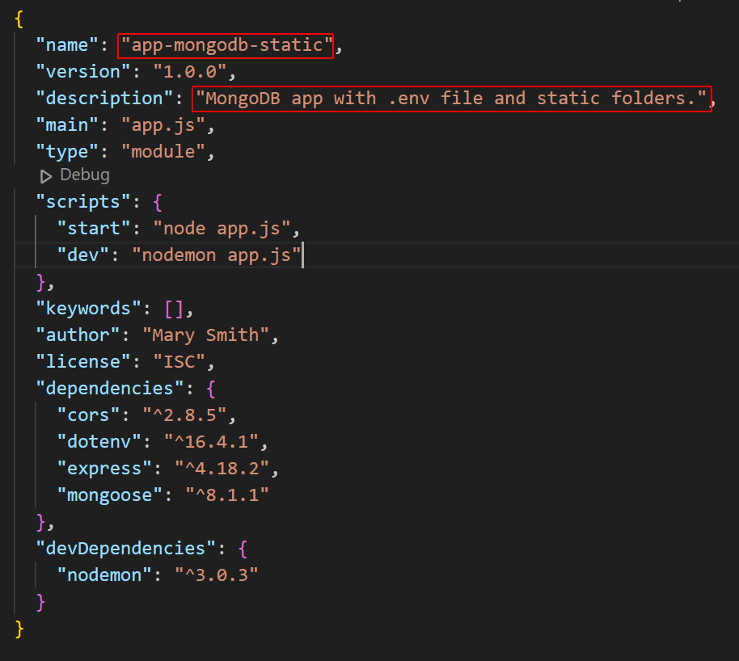Creating a /public folder for static files
Your next task is to create a folder to hold the static files used by your app. Follow these steps:
- In your /server folder, create a folder named /public.
- Inside this folder, create a subfolder named /images.
- Download and upzip the following images to this subfolder. soccer-player-images.zip You can delete the downloaded ZIP file when finished.
Note that one image is named generic.jpg. For testing purposes, you will use this as a default image.
Updating your models.js file
Using VS Code, update the soccerPlayerSchema in the models.js file for your database collection as shown below.
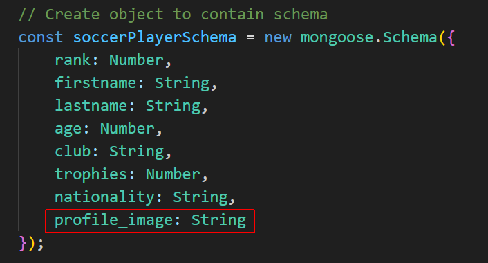Adding a new database collection
You will now create a new, separate collection in your MongoDB database for the soccer players with images. Follow these steps:
- Save the JSON file below to your local machine. soccer_players_images.json You can see that each player now has a field named profile_image that contains the name of a JPG file. 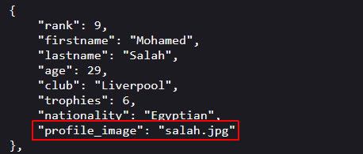
- Launch MongoDB Compass and connect with your db_soccer_players database.
- Near the top-left of the screen, click the Create Collection button. 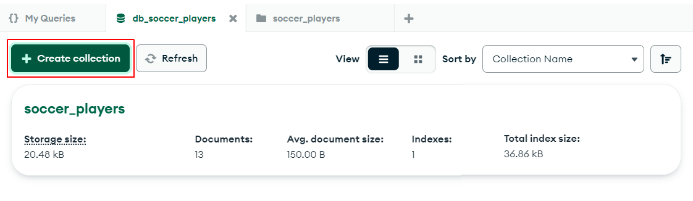
- Name the new collection soccer_players_images. 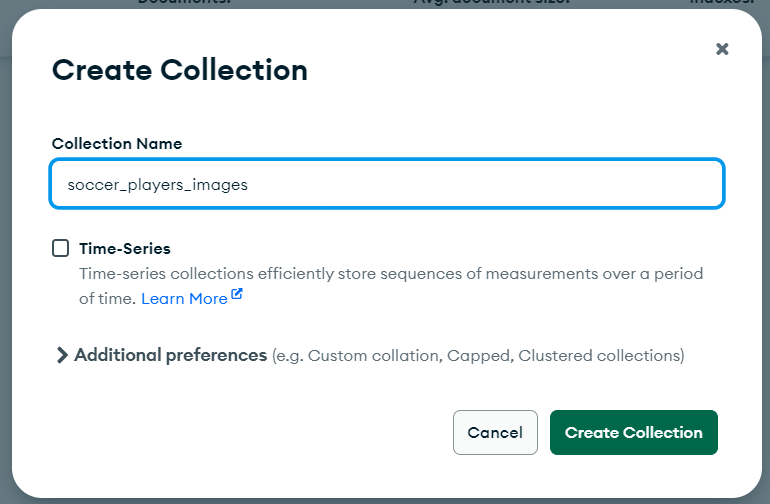
- Click the dropdown arrow on the ADD DATA button, select Import JSON or CSV file, and import the soccer_players_images.json file.
 The first two documents in your new collection should look as shown below.
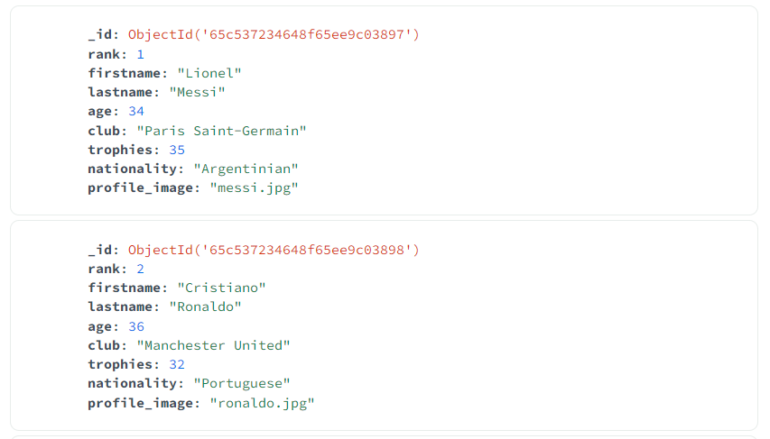
You can now close the MongoDB Compass app.
The first two documents in your new collection should look as shown below.
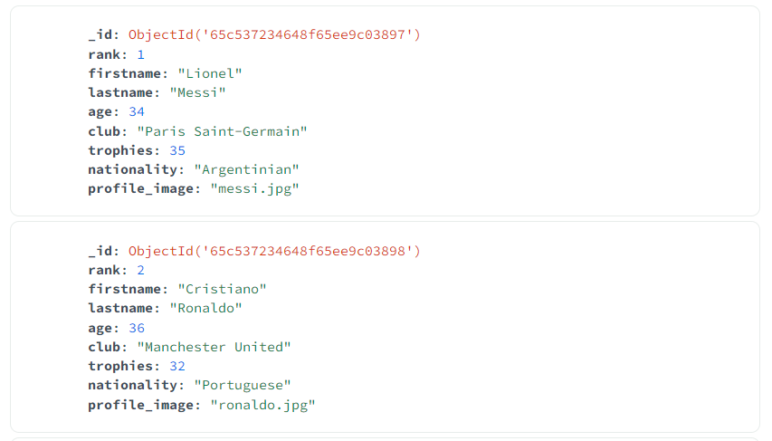
You can now close the MongoDB Compass app. - In VS Code, open the models.js file and update the collection to be used by your app.js file as shown below. 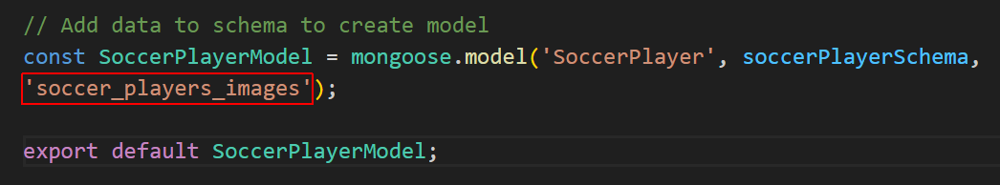
In your terminal, verify that the app still runs without errors and connects with MongoDB successfully.
Updating your HTML views pages
Download the three web pages below to your /views folder to overwrite the files already there:
Adding the middleware for static files
Your final task is to add the middleware function in Express for handling static files.
Update your app.js file as follows.
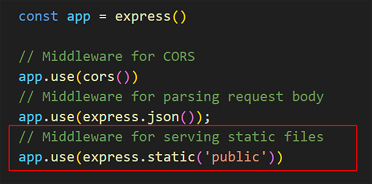That's it.
In a terminal, verify the app runs without error and connects with MongoDB successfully.
In a web browser, from the /views folder, open index.html and follow the links to verify that images are now displayed.